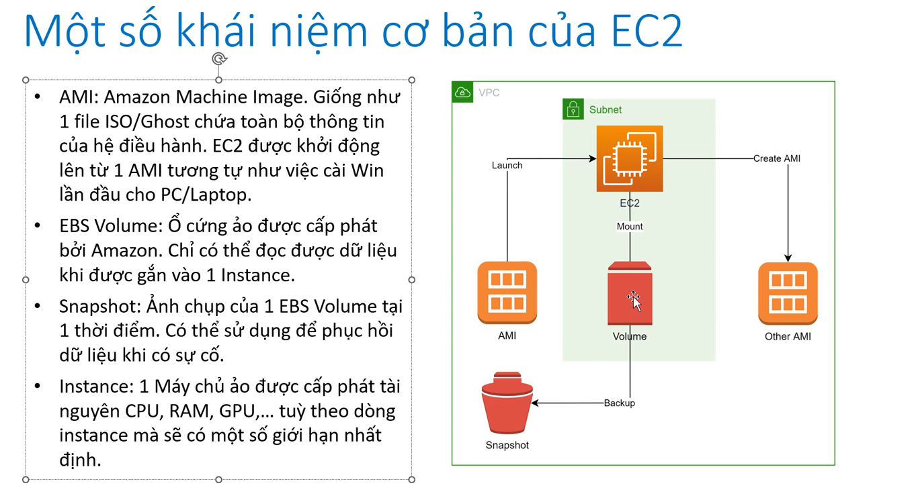
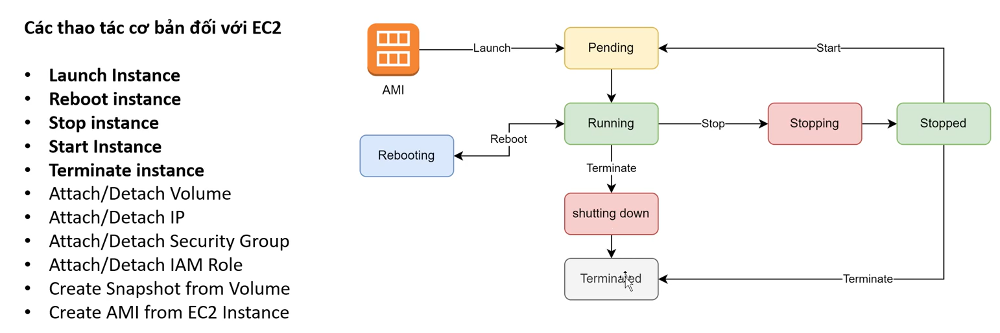
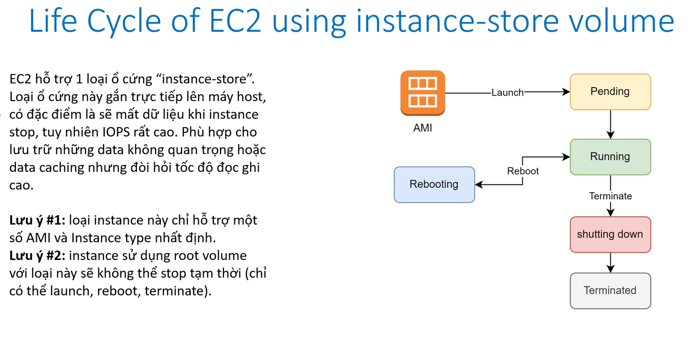
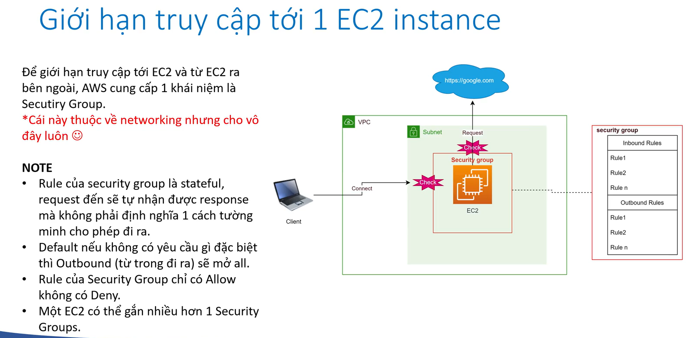
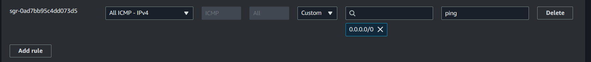
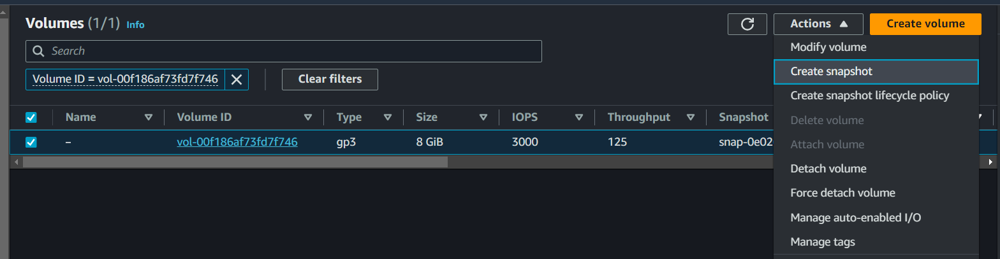
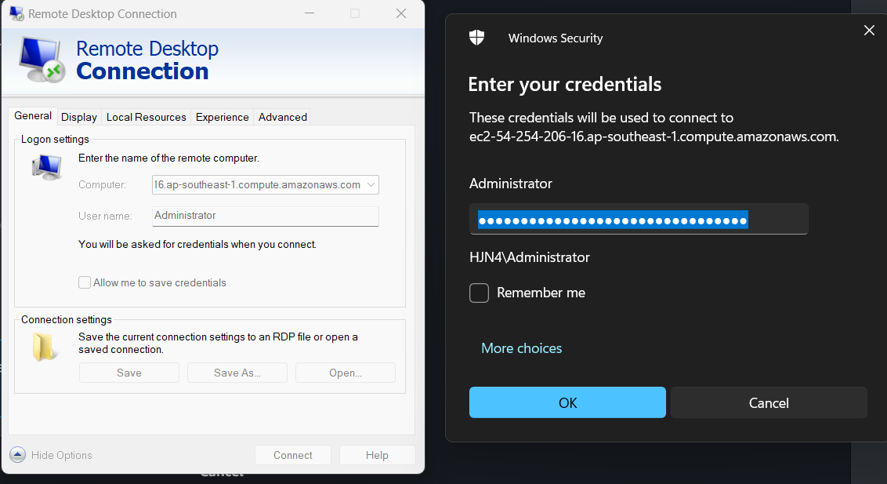
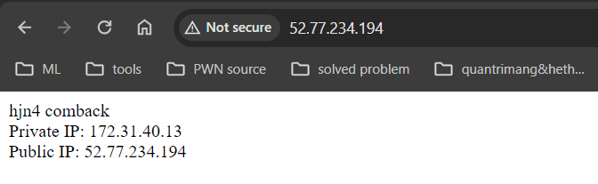
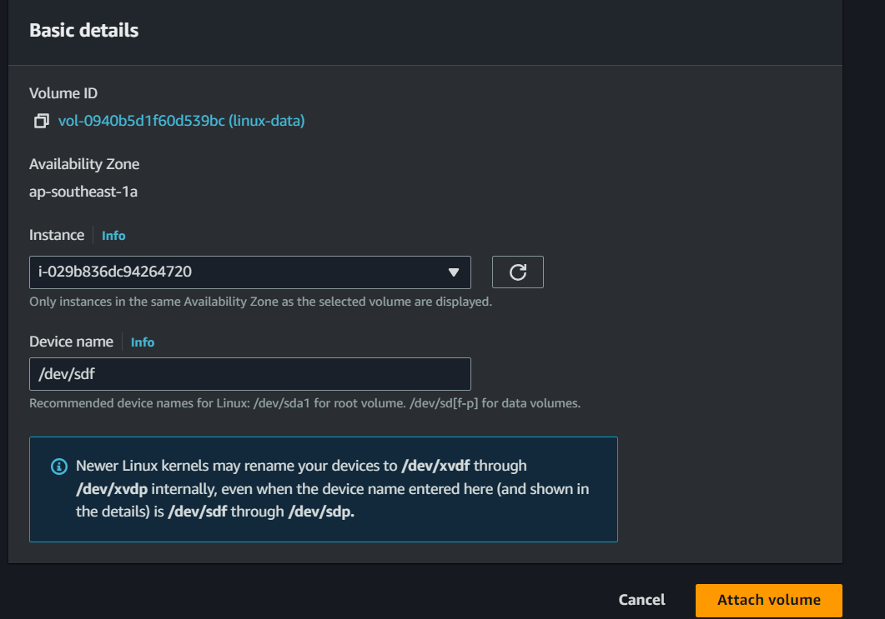

EC2
- what's EC2?
- Life cycle
- Secutiy group
- httpd
- snapshot
- AMI
- window instance
- userdata & metadata
- Usecase
- pricing
- EBS
- extend volume windows
- extend volume linux
- For more reference:
what's EC2?

Life cycle of EC2


Secutiy group

config for ping from everywhere to EC2 instance:

httpd with EC2
sudo yum update -y
sudo yum install httpd -y
sudo su
echo "abc" > /var/www/html/index.html
systemctl enable httpd
service httpd start
access to http://
create snapshot for volume

khi mà có sự cố, mình cần khôi phục lại trạng thái trc đó đã được snapshot, thì ta cần create volume from snapshot và mount nó vào instance.
Create AMI
Create Window instance
add rule RDP allow 0.0.0.0 để remote to window
use remote desktop:

user-data & meta-data
- userdate : là data mà mình truyền lên để khi launch instance thì nó sẽ chạy thêm các script đó như là cài đặt các tool, cấu hình gì đó,...
- metadata : là các thông tin của instance sau khi launch như là puplic, private IP, security group,...
- Metadata được lưu tại: http://169.254.169.254/latest/meta-data cố định cho cả linux và window
export TOKEN=`curl -X PUT "http://169.254.169.254/latest/api/token" -H "X-aws-ec2-metadata-token-ttl-seconds: 21600"`
echo "<br>Private IP: " >> index.html
curl -H "X-aws-ec2-metadata-token: $TOKEN" -v http://169.254.169.254/latest/meta-data/local-ipv4 >> index.html
echo "<br>Public IP: " >> index.html
curl -H "X-aws-ec2-metadata-token: $TOKEN" -v http://169.254.169.254/latest/meta-data/public-ipv4 >> index.html

Usecase
EC2 là 1 dịch vụ rất mạnh của AWS, xuất hiện trong hầu hết các hệ thống. Ngoài ra EC2 còn là nền tảng cơ bản của các dịch vụ Container như ECS và EKS (k8s). Usecase cơ bản:
- Lift and shift: Migrate 1:1 các ứng dụng đang chạy trên On-premise của cty, không có nhu cầu tái cấu trúc.
- Chạy các website cơ bản all in one.
- Compute cluster
- Dùng làm database trong trường hợp không muốn xài dịch vụ database sẵn của AWS.
- Dùng làm node của cluster K8S.
EC2 pricing
- On-Demand: Xài nhiêu trả nhiêu, không cần trả trước. Phù hợp cho đa số mục đích (học tập, môi trường dev,…)
- Reserve Instance or Saving Plan: Mua trước 1-3 năm hoặc commit số tiền sẽ xài hằng tháng để được discount so với On-Demand (tối đa discount lên tới ~72%). Phù hợp cho môi trường production.
- Spot Instance: Đấu giá để được sd EC2 instance vào các khung giờ thấp điểm. Phù hợp cho các tác vụ xử lý hàng loạt, cần giá rẻ, xử lý có thể resume lại khi bị dừng đột ngột.
- Dedicated Host: Thuê riêng phần cứng nếu có yêu cầu đặc biệt về compliance.
Elastic Block Storage (EBS)
- Đặc trưng:
- Là một cơ chế lưu trữ dạng block.
- Đơn vị quản lý là các EBS Volume.
- Chỉ có thể access data khi được gắn vào 1 EC2 instance (dùng làm ổ root, C: hoặc ổ data)
- Một số loại EBS đặc biệt cho phép gắn vào nhiều hơn 1 EC2 instance (multi attach).
- Có thể tăng size một cách dễ dàng ngay cả khi server đang chạy (không thể giảm size).
- Tính tiền:
- Dung lượng của volume ($/GB/Month), không xài hết cũng mất tiền 100% trên dung lượng vì đã cấp phát rồi.
- IOPS: Tốc độ đọc ghi càng cao, càng phát sinh phí.
- Dung lượng của các bản snapshot của ổ cứng ($/GB/Month) tuy nhiên giá rẻ hơn lưu trữ.
- Các loại EBS:
- General purpose (default): gp2, gp3: Phù hợp cho hầu hết các mục đích sử dụng.
- IOPS Provisioned: io1, io2: Phù hợp cho các ứng dụng đòi hỏi tốc độ đọc ghi cao.
- Throughput optimized HDD: Dùng cho các hệ thống về Bigdata, Data warehouse, cần throughput cao.
- Cold HDD: Lưu trữ giá rẻ cho các file ít khi được access (VD File server của công ty).
- Magnetic: Thế hệ trước của HDD, ít được sd
Add and Extend Esternal volume for Windows
- Create volume lưu ý phải cùng Availability Zone với instance
- Attach volume vừa tạo vào instance mong muốn
- Vào instance windows > disk management > create new disk
Add and Extend Esternal volume for Linux

Sau khi attach thì ta kiểm tra thì thấy nó chỉ mới mount vô thoi chứ chưa sử dụng được:
[root@ip-172-31-40-13 html]# lsblk
NAME MAJ:MIN RM SIZE RO TYPE MOUNTPOINTS
xvda 202:0 0 8G 0 disk
├─xvda1 202:1 0 8G 0 part /
├─xvda127 259:0 0 1M 0 part
└─xvda128 259:1 0 10M 0 part /boot/efi
xvdf 202:80 0 10G 0 disk
[root@ip-172-31-40-13 html]# df -h
Filesystem Size Used Avail Use% Mounted on
devtmpfs 4.0M 0 4.0M 0% /dev
tmpfs 475M 0 475M 0% /dev/shm
tmpfs 190M 2.9M 188M 2% /run
/dev/xvda1 8.0G 1.6G 6.5G 20% /
tmpfs 475M 0 475M 0% /tmp
/dev/xvda128 10M 1.3M 8.7M 13% /boot/efi
tmpfs 95M 0 95M 0% /run/user/1000
Nếu muốn volume sau này có thể extend được thì ta sẽ tạo thêm 1 layer là partition:
[root@ip-172-31-40-13 html]# sudo fdisk /dev/xvdf
Welcome to fdisk (util-linux 2.37.4).
Changes will remain in memory only, until you decide to write them.
Be careful before using the write command.
Device does not contain a recognized partition table.
Created a new DOS disklabel with disk identifier 0x531b6dd7.
Command (m for help): m
Help:
DOS (MBR)
a toggle a bootable flag
b edit nested BSD disklabel
c toggle the dos compatibility flag
Generic
d delete a partition
F list free unpartitioned space
l list known partition types
n add a new partition
p print the partition table
t change a partition type
v verify the partition table
i print information about a partition
Misc
m print this menu
u change display/entry units
x extra functionality (experts only)
Script
I load disk layout from sfdisk script file
O dump disk layout to sfdisk script file
Save & Exit
w write table to disk and exit
q quit without saving changes
Create a new label
g create a new empty GPT partition table
G create a new empty SGI (IRIX) partition table
o create a new empty DOS partition table
s create a new empty Sun partition table
Command (m for help): n
Partition type
p primary (0 primary, 0 extended, 4 free)
e extended (container for logical partitions)
Select (default p): p
Partition number (1-4, default 1): 1
First sector (2048-20971519, default 2048):
Last sector, +/-sectors or +/-size{K,M,G,T,P} (2048-20971519, default 20971519):
Created a new partition 1 of type 'Linux' and of size 10 GiB.
Command (m for help): w
The partition table has been altered.
Calling ioctl() to re-read partition table.
Syncing disks.
check lại
[root@ip-172-31-40-13 html]# lsblk
NAME MAJ:MIN RM SIZE RO TYPE MOUNTPOINTS
xvda 202:0 0 8G 0 disk
├─xvda1 202:1 0 8G 0 part /
├─xvda127 259:0 0 1M 0 part
└─xvda128 259:1 0 10M 0 part /boot/efi
xvdf 202:80 0 10G 0 disk
└─xvdf1 202:81 0 10G 0 part
Thì ta thấy cái xvdf ban đầu đã có thêm 1 partition giúp mình sau này có thể extend volume. Phải làm thế sau này mới extend được, nếu làm trực tiếp trên thằng xvdf thì sau này không extend được
[root@ip-172-31-40-13 html]# sudo mkfs -t xfs /dev/xvdf1
meta-data=/dev/xvdf1 isize=512 agcount=4, agsize=655296 blks
= sectsz=512 attr=2, projid32bit=1
= crc=1 finobt=1, sparse=1, rmapbt=0
= reflink=1 bigtime=1 inobtcount=1
data = bsize=4096 blocks=2621184, imaxpct=25
= sunit=0 swidth=0 blks
naming =version 2 bsize=4096 ascii-ci=0, ftype=1
log =internal log bsize=4096 blocks=16384, version=2
= sectsz=512 sunit=0 blks, lazy-count=1
realtime =none extsz=4096 blocks=0, rtextents=0
[root@ip-172-31-40-13 html]# sudo mkdir /data
[root@ip-172-31-40-13 html]# sudo mount /dev/xvdf1 /data
[root@ip-172-31-40-13 html]# lsblk
NAME MAJ:MIN RM SIZE RO TYPE MOUNTPOINTS
xvda 202:0 0 8G 0 disk
├─xvda1 202:1 0 8G 0 part /
├─xvda127 259:0 0 1M 0 part
└─xvda128 259:1 0 10M 0 part /boot/efi
xvdf 202:80 0 10G 0 disk
└─xvdf1 202:81 0 10G 0 part /data
[root@ip-172-31-40-13 html]# sudo blkid
/dev/xvda128: SEC_TYPE="msdos" UUID="A208-E305" BLOCK_SIZE="512" TYPE="vfat" PARTLABEL="EFI System Partition" PARTUUID="1bba082f-4fd3-4536-ba50-1468a8741f84"
/dev/xvda127: PARTLABEL="BIOS Boot Partition" PARTUUID="7e86a24a-2fe2-4aff-a1c2-5ff59eeb2729"
/dev/xvda1: LABEL="/" UUID="66eb3733-37f3-4398-9990-e97c15b01e5b" BLOCK_SIZE="4096" TYPE="xfs" PARTLABEL="Linux" PARTUUID="9c63c137-580c-47df-a666-4e9d4ec5d6b4"
/dev/xvdf1: UUID="3cba17cc-169d-4b89-b96d-6696f868bf4a" BLOCK_SIZE="512" TYPE="xfs" PARTUUID="531b6dd7-01"
[root@ip-172-31-40-13 html]# sudo lsblk -o +UUID
NAME MAJ:MIN RM SIZE RO TYPE MOUNTPOINTS UUID
xvda 202:0 0 8G 0 disk
├─xvda1 202:1 0 8G 0 part / 66eb3733-37f3-4398-9990-e97c15b01e5b
├─xvda127 259:0 0 1M 0 part
└─xvda128 259:1 0 10M 0 part /boot/efi A208-E305
xvdf 202:80 0 10G 0 disk
└─xvdf1 202:81 0 10G 0 part /data 3cba17cc-169d-4b89-b96d-6696f868bf4a
[root@ip-172-31-40-13 html]# sudo vim /etc/fstab
[root@ip-172-31-40-13 html]# lsblk
NAME MAJ:MIN RM SIZE RO TYPE MOUNTPOINTS
xvda 202:0 0 8G 0 disk
├─xvda1 202:1 0 8G 0 part /
├─xvda127 259:0 0 1M 0 part
└─xvda128 259:1 0 10M 0 part /boot/efi
xvdf 202:80 0 10G 0 disk
└─xvdf1 202:81 0 10G 0 part /data
[root@ip-172-31-40-13 html]# sudo umount /data
[root@ip-172-31-40-13 html]# lsblk
NAME MAJ:MIN RM SIZE RO TYPE MOUNTPOINTS
xvda 202:0 0 8G 0 disk
├─xvda1 202:1 0 8G 0 part /
├─xvda127 259:0 0 1M 0 part
└─xvda128 259:1 0 10M 0 part /boot/efi
xvdf 202:80 0 10G 0 disk
└─xvdf1 202:81 0 10G 0 part
[root@ip-172-31-40-13 html]# sudo mount -a
[root@ip-172-31-40-13 html]# lsblk
NAME MAJ:MIN RM SIZE RO TYPE MOUNTPOINTS
xvda 202:0 0 8G 0 disk
├─xvda1 202:1 0 8G 0 part /
├─xvda127 259:0 0 1M 0 part
└─xvda128 259:1 0 10M 0 part /boot/efi
xvdf 202:80 0 10G 0 disk
└─xvdf1 202:81 0 10G 0 part /data
extend volume
[root@ip-172-31-40-13 html]# lsblk
NAME MAJ:MIN RM SIZE RO TYPE MOUNTPOINTS
xvda 202:0 0 8G 0 disk
├─xvda1 202:1 0 8G 0 part /
├─xvda127 259:0 0 1M 0 part
└─xvda128 259:1 0 10M 0 part /boot/efi
xvdf 202:80 0 30G 0 disk
└─xvdf1 202:81 0 10G 0 part /data
[root@ip-172-31-40-13 html]# sudo growpart /dev/xvdf 1
CHANGED: partition=1 start=2048 old: size=20969472 end=20971520 new: size=62912479 end=62914527
[root@ip-172-31-40-13 html]# lsblk
NAME MAJ:MIN RM SIZE RO TYPE MOUNTPOINTS
xvda 202:0 0 8G 0 disk
├─xvda1 202:1 0 8G 0 part /
├─xvda127 259:0 0 1M 0 part
└─xvda128 259:1 0 10M 0 part /boot/efi
xvdf 202:80 0 30G 0 disk
└─xvdf1 202:81 0 30G 0 part /data